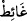

İsmet olmayan evde hayır olmaz
Guslün vâcib olmasında, kalp ve ruhun mevcudiyeti ve bunların dünyâ sevgisi ve
şehvetleriyle kirlenmesi hasebiyle hakîkî guslün gerektiğine tenbih ve işâret vardır. Bu
yüzden kalbin tevbe, nedâmet ve ihlâs suyuyla temizlenmesi icâbeder. O, vâciblerin en
önde geleni ve güçlüsüdür. Ehlullah bâtın temizliğine, dış temizlikten daha çok önem
verirler ve hassâsiyet gösterirler. Zamanımızdaki bâzı mutasavvıfların elbiselerine
biraz pislik bulaştığında hemen onu yıkamada gösterdikleri hassasiyeti, içlerindeki
günah ve diğer yerilen sıfatlar için göstermedikleri görülmektedir.
Sa’dî (k.s.) şöyle der:
Kimin elbisesi temiz, huyu çirkin ise
Cehennemin kapısına kilit vurmaya ne gerek!
Nitekim bir âyet-i kerîmede: “(Kur’ân’a) ancak temiz olanlar dokunabilirler.” (el-
Vâkıa, 56/79) buyrulur.
“Hasta” yani suyu kullandığınızda ölümünüze sebep olmasından veya artmasından
korktuğunuz bir hastalığınız varsa “yâhut yolcu iseniz” uzun veya kısa bir yolculuğa
karar vermişseniz, “yâhut biriniz tuvaletten gelmişse” Tuvalet diye ifâde ettiğimiz “__WORD__” kelimesi rahatlanılan çukur demektir. Oradan gelmek def-i hacetten kinayedir.
Âdet olarak def-i hâccette bulunmak isteyen kimse, insanların gözlerinden kendisini
gizlemek için oraya gider. “Yâhut da kadınlara dokunmuşsanız” kadınlara dokunmak
erkeğin teninin kadının tenine değmesidir ki bu da cinsî münâsebetten kinâyedir.
Bu çeşit kinâyeler Kur’ân’ın âdâbındandır. Çünkü bunu açıkça söylemek,
müstehcendir. “ve bu hallerde su bulamamışsanız” suyu bulamamaktan maksat,
kullanma imkânı olmamasıdır. Çünkü kullanılma imkânı olmayan şey yok gibidir.
“Temiz toprakla teyemmüm edin.” Yani yerin üzerinden temiz bir şey bulup onunla
teyemmüm edin.
Saîd, yeryüzündeki toprak veya benzeri şeylerdir. Yeryüzünde temiz ve yüksek olarak
kaldığı için bu isim verilmiştir.
Tayyib ise toprak cinsinden olan şeyler saçılmış olsun veya olmasın temiz
anlamındadır. Hattâ üzerinde toprak olmayan bir kaya bile, teyemmüm yapacak kişi
elini vurup meshetse Ebû Hanîfe (rh.a.)’a göre yeterlidir.
“Yüzünüzü ve ellerinizi onunla meshedin.” Yani bu topraktan dirseklerinize kadar
sürün. Çünkü, rivâyet edildiğine göre Rasûlullah (s.a.v.) ellerini toprağa vurup
dirseklerine kadar kollarını meshetmiştir. Teyemmüm abdestin karşılığı olduğu için
onun mikdarınca takdir edilir. Mânâ şöyledir: Ellerinizi toprağa vurduktan sonra
peşpeşe ara vermeden yüzlerinize ve kollarınıza götürerek meshediniz.
Namaz için, temizlenme ve teyemmüm emriyle “Allah size güçlük çıkarmak” dîninizi
zorlaştırmak “istemez; fakat sizi” günahlardan “tertemiz kılmak” ister. Çünkü abdest